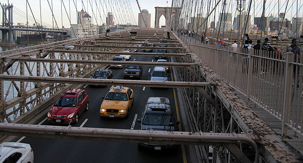

Architectural Innovation
The construction of the Brooklyn Bridge marked a significant economic milestone, fostering trade and commerce between the previously isolated boroughs of Manhattan and Brooklyn. The bridge facilitated the transport of goods and people, contributing to the economic development and urbanization of Brooklyn and solidifying New York City's status as a commercial hub.